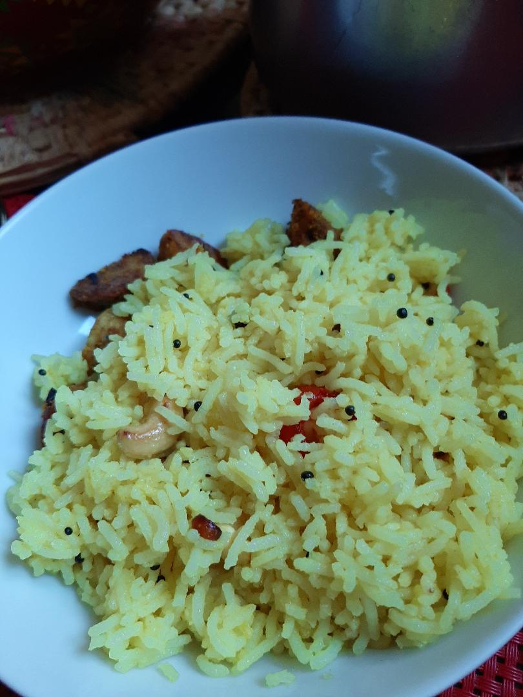

Lemon Rice Recipe

Ingredients
- 1 cup cooked rice
- 1 lime
- Green chillies 2
- 25gms of roased peanuts or roased Cashews
- pinch of turmeric powder
- Salt to taste
- 1tsp of Mustard Seeds
- 1 tbsp of cooking oil or ghee
Steps
- Squeeze the lime and Remove the seeds
- Add salt to taste in the juice
- Heat a frying pan
- Add oil or ghee to it
- When it is hot add the mustard seeds.
Wait till it seasoned well
- Add peanut to it
- Add turmeric powder to it
- Switch off the flase
- Now Add the extracted lime juice
- finally add the rice. Mix well.